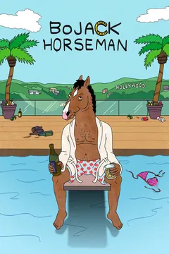

After starring in the popular sitcom "Horsin' Around" in the late 80s and early 90s, BoJack Horseman struggles with his deteriorating popularity, depression, addiction, and maintaining the relationships with those he cares about, but can't seem to stop hurting, all while living in the satirical, pun-filled city of Hollywood, California.